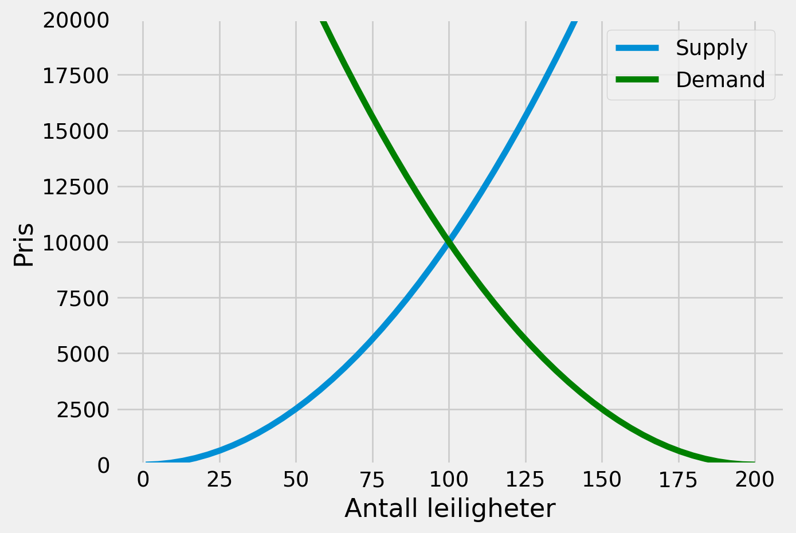
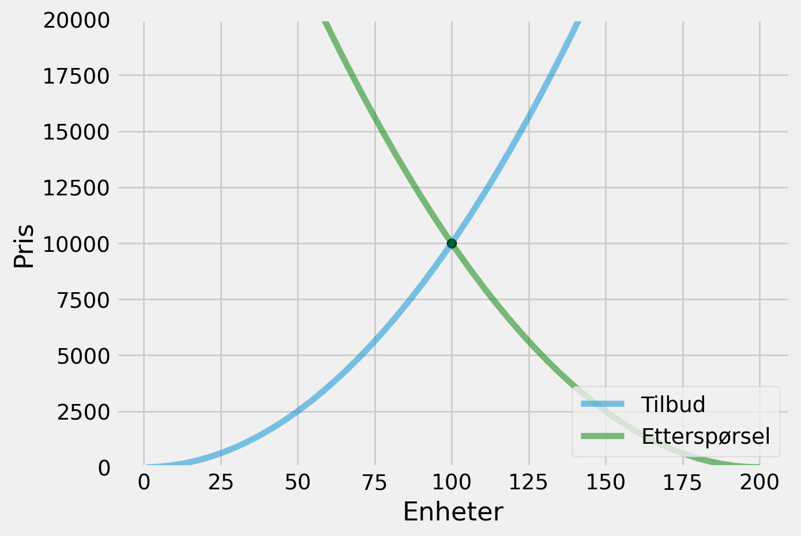
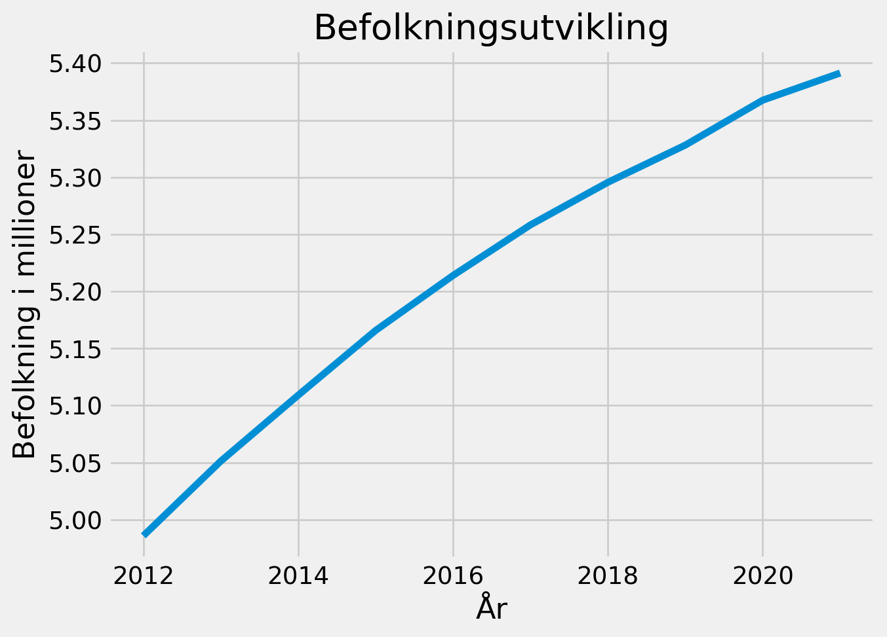
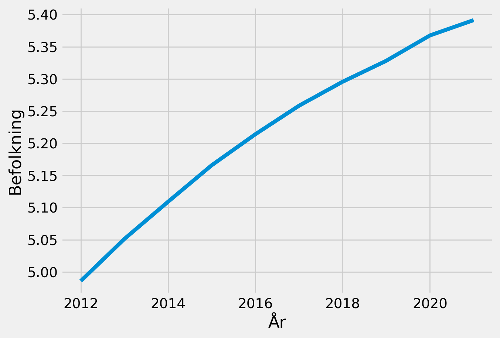
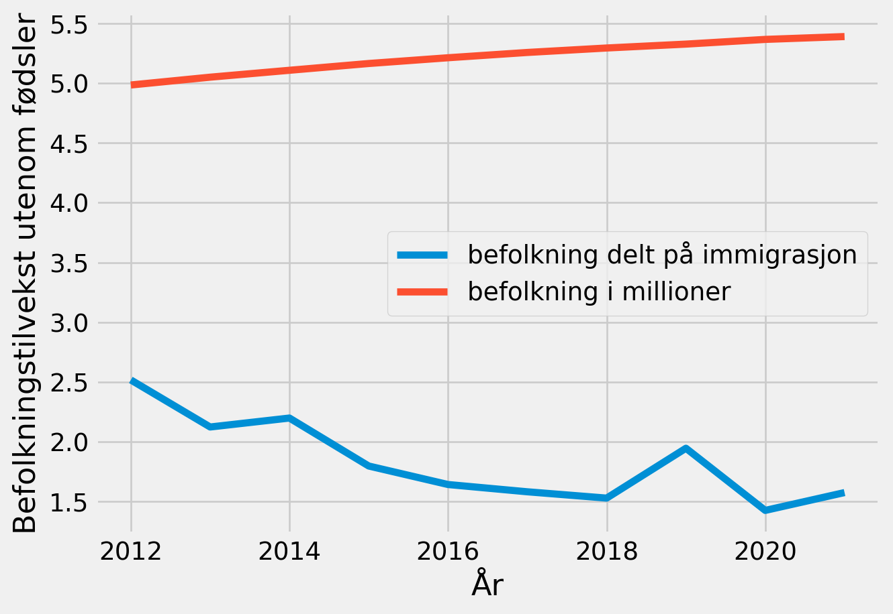
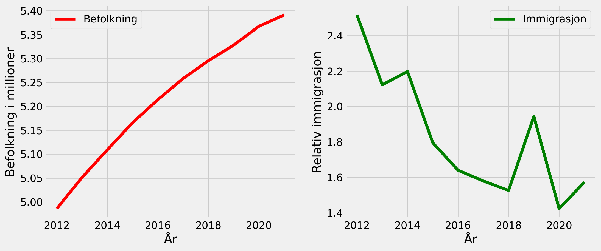

Les oppgaveteksten nøye. Se hvordan man leverer oppgaven
her
og
her. Husk at den skal leveres både som jupyter-fil og som PDF. Kommenter kodene du skriver i alle oppgaver og vær nøye på å definere aksene mm i figurer. I noen av oppgavetekstene står det hint, men det betyr ikke at de ikke kan løses på andre måter
For å hente denne filen til Jupyter gjør du slik:
Åpne et “terminalvindu”
Gå til hjemmeområdet ditt
[user@jupty02 ~]$ cd
Lag en ny mappe på ditt hjemmeområde ved å skrive inn i terminalvinduet
Oppgi gruppenavn m/ medlemmer på epost o.k.aars@uit.no innen 7/10, så blir dere satt opp til tidspunkt for presentasjon 19/10. Bruk så denne filen til å gjøre besvarelsen din. Ved behov; legg til flere celler ved å trykke “b”
Oppgavene
Oppgave 1 (5 poeng)
Lag en kort fortelling i en python kode som inkluderer alle de fire typer variabler vi har lært om i kurset. Koden skal kunne kjøres med print(). Koden burde inneholde utregninger av elementer du har definert
Definerer elementer
# Dette er en boolping_pong_is_fun=True# Dette er en integernumber_of_beer=8# Detfinerer noen floatspils_price=30.0ping_pong_victory=100.0#Historien er en stringHistory=f"""Ole og Derek møtes hver fredag etter jobb for å spilleping pong og drikke pils til {pils_price} kroner halvliteren. \nDe synes det er veldig {ping_pong_is_fun} å spille ping pong. \nEn dag spiller Ole og Derek sammen, for hver runde som en person vinner blir den andre skyldig {ping_pong_victory} kroner. \nOle ender opp med å vinne 4 runder fordi Derek drikker {number_of_beer} pils. Ole tar med seg {4*ping_pong_victory} kroner hjem. \nTotalt tapte Derek {4*ping_pong_victory+pils_price*8} kroner på ping pong eventyret sitt. \n"""#Printer historienprint(History)
Ole og Derek møtes hver fredag etter jobb for å spilleping pong og drikke pils til 30.0 kroner halvliteren.
De synes det er veldig True å spille ping pong.
En dag spiller Ole og Derek sammen, for hver runde som en person vinner blir den andre skyldig 100.0 kroner.
Ole ender opp med å vinne 4 runder fordi Derek drikker 8 pils. Ole tar med seg 400.0 kroner hjem.
Totalt tapte Derek 640.0 kroner på ping pong eventyret sitt.
Oppgave 2 (10 poeng)
Leieprisene i landet har steget de siste månedene. Ved å bruke realistiske tall a) Lag tilbuds og etterspørselsfunksjoner for leie av bolig (Bruk av ikke-lineære funksjoner belønnes).
Definer funksjonene slik at det er mulig å finne en likevekt
import matplotlib.pyplot as pltimport matplotlib.style as styleimport numpy as np# Lager en tilbudsfunksjon hvor x er opphøyd i 2def supply(x):return x**2# Lager en etterspørselsfunksjon hvor x-200 er opphøyd i 2def demand(x):return (x-200)**2
Vis at disse er henholdvis fallende og stigende, ved bruk av
Regning
figurativt (matplotlib) Husk å markere aksene tydelig og at funskjonene er definert slik at linjene krysser
# Regner ut at demand er synkende og supply er økende med høyere x verdierprint(demand(10))print(demand(100))print(supply(10))print(supply(100))# plotter 1 punkt med 0 intervall til 200x = np.linspace(1,200)style.use("fivethirtyeight")# tegner supplyplt.plot(x,supply(x),label="Supply")# tegner demandplt.plot(x,demand(x),color="green",label="Demand")#legger tillegend, for å få opp funksjonsnavneneplt.legend(loc="upper right")# lager navn på x, y og setter en limit på 20000 på y aksenplt.ylabel("Pris")plt.xlabel("Antall leiligheter")plt.ylim(0,20000)plt.show()
36100
10000
100
10000

Kommenter funksjonene og likevekten. Vis gjerne figurativt hvor likevekten er ved bruk av scatter
# etterspørselfunksjonen # Tilbudsfunksjonen # tegner linspace med 1 mellomrom og 200 på x-aksenx = np.linspace(1,200)#tegner supplyplt.plot(x,supply(x),label='Tilbud', alpha=0.5)#tegner demandplt.plot(x,demand(x),color='green',label='Etterspørsel', alpha=0.5)#viser likevektplt.scatter(100,10000, color="black")#lager legend:plt.legend(loc='lower right')#benevner akserplt.ylabel('Pris')plt.xlabel('Enheter')plt.ylim(0,20000)plt.show();

Oppgave 3 (15 poeng)
SSB har omfattende data på befolkningsutvikling (https://www.ssb.no/statbank/table/05803/tableViewLayout1/). Disse dataene skal du bruke i de neste deloppgavene.
lag lister av følgende variabler: “Befolkning 1. januar”, “Døde i alt”, “Innflyttinger” og “Utflyttinger”. Velg selv variabelnavn når du definerer dem i python. Første element i hver liste skal være variabelnavnet. Bruk tall for perioden 2012-2021. Lag så en liste av disse listene. Du kan kalle den “ssb”.
Hint: når du skal velge variabler på SSB sin nettside må du holde inne ctrl for å velge flere variabler.
# Lager vanlige python lister, gir dem navnet med dataen de inneholder i første elementår = ["år", 2012,2013,2014,2015,2016,2017,2018,2019,2020,2021]befolkning = ["befolkning", 4985870, 5051275, 5109056, 5165802, 5213985, 5258317, 5295619, 5328212, 5367580, 5391369]døde_i_alt = ["døde_i_alt", 41992, 41282, 40394, 40727, 40726, 40774, 40840, 40684, 40611, 42002]innflyttinger = ["innflyttinger", 78570, 75789, 70030, 67276, 66800, 58192, 52485, 52153, 38071, 53947]utflyttinger = ["utflyttinger", 31227, 35716, 31875, 37474, 40724, 36843, 34382, 26826, 26744, 34297]# Lager en liste av listene, som jeg kaller ssbssb = ([år, befolkning, døde_i_alt, innflyttinger, utflyttinger])
# Gjør ssb om til en matrise# Omgjør listen til en numpy arraynp_ssb = np.array(ssb)# Tar en backup av listennp_ssb1 = np.array(ssb)
# Velger tallene i en egen array og konverterer de fra string til intssb_int = np.array(np_ssb[:,1:],dtype=int)ssb_int
vis befolkningsutviklingen grafisk for de gjeldene årene ved bruk av matplotlib, og mer spesifikt “fig, ax = plt.subplots()”. Vis befolkning på y-aksen i millioner
# Starter plottetfig, ax = plt.subplots()# Velger ut observasjonene med slicing og plasserer årstall på x-aksen og befolkningsutviklingen på y-aksenax.plot(ssb_int[0,:], ssb_int[1,:]/1000000)# Lager titlerax.set(title="Befolkningsutvikling", xlabel="År", ylabel="Befolkning i millioner");

Lag det samme plottet ved bruk av oppslag. Hva er fordelen med dette?
# Lager et oppslag/dictionary, definerer variablene med navn etter å ha slicet.# Fordelen med dette er at man kan bruke de videre uten å slice hver gang,# og med et navn på elementene vet man hva man jobber med.oppslag={'år':ssb_int[0,:],'befolkning':ssb_int[1,:], }# Plotter figuren på nytt med oppslag.plt.ylabel("Befolkning")plt.xlabel("År")plt.plot(oppslag['år'], oppslag['befolkning']/1000000)plt.ticklabel_format(style='plain');

Hva er den relative befolkningstilveksten utenom fødsler (dvs. innvandring/utvandring)? Definer en ny array og legg den til i oppslaget du laget i oppgaven tidligere. Kall den “rel_immigration”. Plot denne sammen med grafen du laget i (d).
# Subtraherer innvandring med utvandring og legger dette til i en ny arrayinnflyttinger = ssb_int[-2]utflyttinger = ssb_int[-1]reel_immigration = np.divide(innflyttinger, utflyttinger)# Trekker ut befolkning fra ssb_int og subtraherer immigrasjon fra befolkning# Legger til de nye arrayene i oppslagetoppslag["relativ_immigrasjon2"]=reel_immigration[:]#Plotter befolkning uten immigrasjon og befolkning på samme figurplt.plot(oppslag["år"], oppslag["relativ_immigrasjon2"], label="befolkning delt på immigrasjon")plt.plot(oppslag["år"], oppslag["befolkning"]/1000000, label="befolkning i millioner")plt.ticklabel_format(style="plain")plt.xlabel("År")plt.ylabel("Befolkningstilvekst utenom fødsler")plt.legend()plt.show();

ekstrapoeng. Kan plotte de samme tallene (dvs “rel_immigration” og “befolkning” sammen med år) i to figurer ved siden av hverandre ved bruk av “fig, (ax1, ax2) = plt.subplots(1, 2)”. Gi grafene ulik farge
# Lager et subplot med to figurerfig, (ax1, ax2) = plt.subplots(1, 2, figsize=(12,5))# Plotter inn befolkning i figur ax1, og immigrasjon i figur ax2ax1.plot(oppslag["år"], oppslag["befolkning"]/1000000, label="Befolkning", color="red")ax2.plot(oppslag["år"], oppslag["relativ_immigrasjon2"], label="Immigrasjon", color="green")ax1.set_ylabel("Befolkning i millioner")ax1.set_xlabel("År")ax2.set_ylabel("Relativ immigrasjon")ax2.set_xlabel("År")ax2.legend()ax1.legend()plt.show();

Oppgave 4 (20 poeng)
Et lån består som regel av et månedlig terminbeløp. Dette beløpet er summen av avdrag (nedbetalingen på lånet) og renter. Vi antar månedlig forrenting i alle oppgavene. Dvs. at det er 12 terminer i hvert år.
a) Lag en funksjon som regner ut hvor mye lånet “x” koster deg i renteutgifter for “t” terminer med årlig rente “r” for et serielån.
Siden dette er et serielån, så vil avdragene være like hver måned men renteutgiftene reduseres i takt med avdragene. Renteutgiftene for en gitt termin “t” vil derfor være den årlige renten “r” (delt på antall forrentinger “f”) på gjenværende beløp på det tidspunktet. \(renteutgifter_{t} = (x-a*(t-1))*{r/f}\)
Det vil si at renteutgiftene første termin er \(renteutgifter_{1} = (x-a*0)*{r/f}\), og andre termin er \(renteutgifter_{2} = (x-a*1)*{r/f}\) osv..
Siden vi er ute etter den totale kostnaden i svaret, må du summere renteutgiftene over alle terminer, det vil si \(\sum_{t=1}^N(x-a*(t-1))*{r/f}\). Dette betyr egentlig bare \(renteutgifter_{1} + renteutgifter_{2},...,+renteutgifter_{t}\)
Hint: siden terminbeløpet varierer for hver måned (pga at rentene endres), må alle enkeltperioder summeres. Det kan være nyttige å bruke funksjonen np.arange() til dette. Mao, det er ikke nødvendig å bruke sigma (\(\sum_{t=1}^N\)) i formelen til dette
# x = lån# r = rente# a = avdragsbeløp# t = terminer# f = forrentingdef serielån(x,r,a,t,f):"""renter på serielån, plott inn verdiene for å regne rentebeløp"""return (x-a*np.arange(t-1))*r/f
regn ut hvor mye lånet koster deg med henholdsvis 10, 20 og 30 års tilbakebetaling. Anta 1 000 000 kr lånebeløp med 3% rente
# for å finne fast avdrag tar jeg 1000000/120=8333, og legger til 120 i terminer som er 10 årten_year =sum(serielån(1000000,0.03,8333,121,12))# for å finne fast avdrag tar jeg 1000000/240=4166, og legger til 240 i terminer som er 20 årtwenty_year =sum(serielån(1000000,0.03,4166,241,12))# for å finne fast avdrag tar jeg 1000000/360=2077, og legger til 360 i terminer som er 30 årthirty_year =sum(serielån(1000000,0.03,2077,361,12))print(f"Serielån med 10 år nedbetalingstid koster", np.round(ten_year))print(f"Serielån med 20 år nedbetalingstid koster",twenty_year)print(f"Serielån med 30 år nedbetalingstid koster",np.round(thirty_year))
Serielån med 10 år nedbetalingstid koster 151256.0
Serielån med 20 år nedbetalingstid koster 301297.8
Serielån med 30 år nedbetalingstid koster 564461.0
Vis hva det samme lånet koster som annuitetslån, dvs differansen mellom alle terminbeløp og lånebeløp.
Annuitetslån gir like terminbeløp hver måned, men renten utgjør en større del av dette beløpet i starten. Terminbeløpet for et annuitetslån er definert ved formelen: \(T = x*\frac{r/f} {(1-(1+(r/f))^{-t})}\), hvor x=lånebeløp, r = årlig rente, t = terminer, f= antall forrentinger
# x = beløp# r = rente# f = forrenting# t = terminerdef annuitetslån(x, r, f, t):"""Tar å regner ut hvor mye du betaler hver termin med annuitetslån"""return x*(r/f)/(1-(1+(r/f))**-t)
# Sjekker hva terminbeløpet blir hver mndprint(annuitetslån(1000000,0.03,12,121))print(annuitetslån(1000000,0.03,12,241))print(annuitetslån(1000000,0.03,12,361))# Sjekker totalkostnad med renter og lån etter 10, 20 og 30 årprint("Lånesum 1000000 over 10 år, totalkostnad med renter",9586*120)print("Lånesum 1000000 over 20 år, totalkostnad med renter",5529*240)print("Lånesum 1000000 over 30 år, totalkostnad med renter",4208*360)
9587.635731401622
5529.176239878081
4208.835816562121
Lånesum 1000000 over 10 år, totalkostnad med renter 1150320
Lånesum 1000000 over 20 år, totalkostnad med renter 1326960
Lånesum 1000000 over 30 år, totalkostnad med renter 1514880
Vis hvordan utviklingen i rentekostnader og avdrag på terminer for serielån grafisk ved hjelp av stackplot funksjonen i matplotlib. Anta et bankinnskudd x = 1 000 000 kr, årlig rente r=3% og antall terminer t = 240 (det vil si 20 år). Siden vi må vise utviklingen per termin, husk at “t” også definerer hvilken måned vi er i. Dvs, hvis t=15, har det gått 1 år og 3 mnd med terminer. Se forøvrig relevante formler i oppgave (a)
Hint1: Siden avdragene er like for alle måneder, kan det være lurt å definere det månedlige avdraget som en liste og gange det med antall perioder. Hint2: Siden vi er ute etter både rentekostnader og avdrag hver for seg, kan det være lurt å definere en funksjon for hver av dem.
# x = Lånebeløp# t = terminer# a = avdragdef avdrag(x,a,t):"""Enkel funksjon for å regne ut avdrag over "t" terminer med "x" beløp""" a=[x/t]return a*t
# Plotter figuren, bruker range for å få y aksen til 240 terminer # tar i bruk rente og avdragsfunksjon for å få inn mine to x punkterfig, ax= plt.subplots(figsize=(8,5))plt.stackplot(range(240),serielån(1000000,0.03,4166.66,241,12),avdrag(1000000,1,240), colors=["Green", "Red"], alpha=0.5, labels=["Renter", "Avdrag"])plt.xlabel("Terminer")plt.ylabel("Terminbeløp")plt.legend()plt.title("Serielån på en million")plt.show();